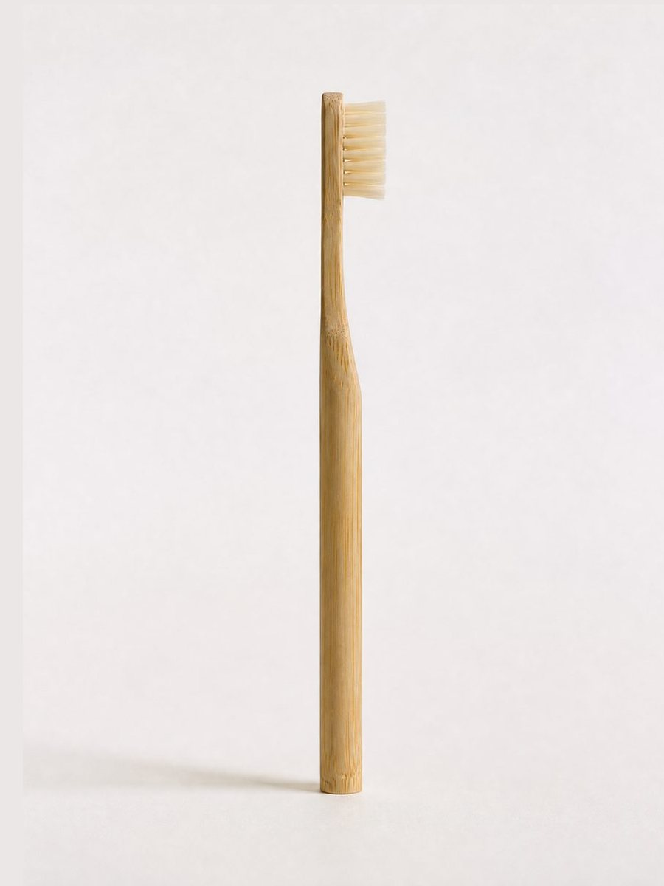
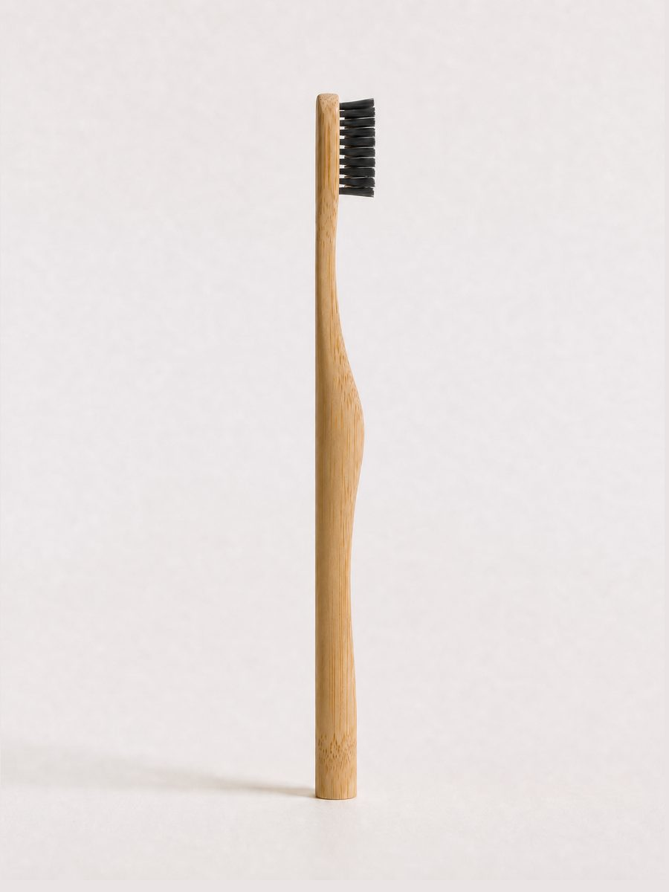
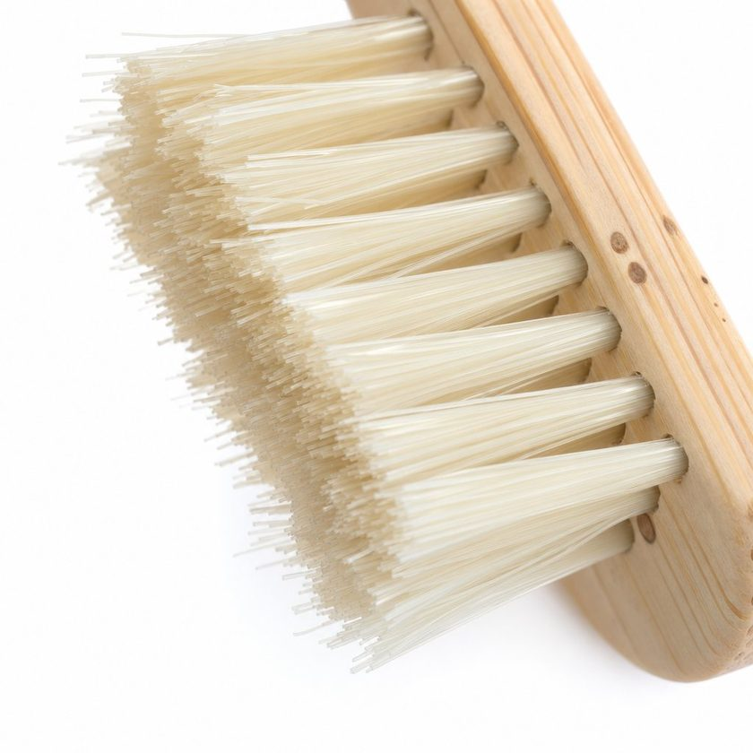

🌱
Snabbast växande växt
Bambu växer upp till 90 cm per dygn och behöver varken bekämpningsmedel eller konstbevattning.
Miljövänliga alternativen för dig som inte vill få i dig plast vid daglig tandborstning.

Idag kallar vem som helst sin produkt "eko", "naturlig" eller "nedbrytbar" – ofta utan att veta vad orden betyder. Jag är kemist, så jag ska vara rak med dig.
Att göra handtaget i bambu är lätt – nästan alla gör det. Det svåra är stråna. På de flesta bambutandborstar är stråna av plast – som aldrig kan komposteras, hur grönt handtaget än marknadsförs.
Vår borste har strån av naturlig galtborst: ren keratin, samma protein som i ditt hår. Plastfritt hela vägen. Se skillnaden själv. 👇



Samma bambuhandtag. Helt olika strån. Det är där greenwashingen göms.
En vanlig plasttandborste tar över 400 år att brytas ner. Vår löses upp i komposten på några månader.
Bambu växer upp till 90 cm per dygn och behöver varken bekämpningsmedel eller konstbevattning.
Våra borst är gjorda av proteinet keratin som kommer från vildsvinshår.
Bambuhandtaget och de naturliga borsten blir till jord igen – långt från plasttandborsten som ligger kvar i naturen i 400 år.
Torrt är galtborst styvt (3–6 GPa), men när man blöter ner den mjuknar den till ≤1 GPa – mjukare än nylon, som ligger kvar på 2–3 GPa även blött.
Forskning visar att mikroplaster kan försvaga cellmembran, utlösa inflammation och härma hormoner i kroppen. Emaljen är hårdare än borststråna, så varje borstning nöter ner plasten och frigör små partiklar i munnen. Genom ett enkelt byte tar du bort en daglig plastkälla – för din egen hälsa.
Välj ditt 6-pack och slutför i kassan på under en minut.
Byt borste varannan månad – ett pack räcker länge.
Gräv ner hela tandborsten i jorden eller lägg den i komposten – naturen tar hand om resten.
Vi hyllar arbetet dessa organisationer gör mot plast och för naturen. Stötta dem gärna du också – varje litet bidrag räknas.
Kämpar mot nedskräpning och plast i den svenska naturen.
Besök →Sveriges största miljöorganisation – för natur och hållbarhet.
Besök →Arbetar globalt för att stoppa mikroplaster vid källan.
Besök →Utvecklar teknik för att rensa haven från plast.
Besök →Handtaget är 100% bambu och borsten är gjord av naturligt, proteinbaserat material. Inga plaster, inget lim och inget BPA.
Gräv ner hela tandborsten i jorden eller lägg den i komposten. Både bambuhandtaget och galtborsten bryts ner naturligt.
Tandläkare rekommenderar byte varannan månad. Ett 6-pack räcker alltså i cirka 1 år för en person.
Frakten är 49 kr per order och skickas med DHL. Vi skickar inom 24 timmar och leverans sker normalt inom 2–4 arbetsdagar.
Självklart. Du har 30 dagars öppet köp på oöppnade förpackningar. Kontakta oss så ordnar vi returen.
Krypterad kassa via Klarna
Handgjord FSC-certifierad bambu
Skickas inom 24 timmar
Enkel retur, inget krångel